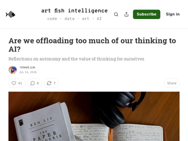
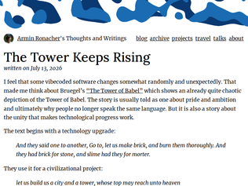
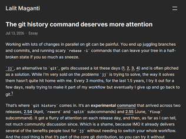
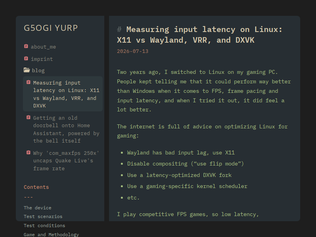

"What I most want to see it compared to is Gemma 4 12B in the 4-bit QAT version. It's barely bigger than this at just under 7GB, so it also runs on just about any modern device and is remarkably smart for its size. It's an excellent tool user, crazy good vision for its size. I'm still trying to wrap my head around how much is lost with each step down in resolution, but the QAT versions from Google seem to prove the answer is "very little" at four bits."
"What is the best way to deploy these on CPUs, arm64 ones in particular?I'm interested in the CPU inference application of these models with things like the FairyFuse kernels.I've tried trillim previously but was disappointed that i got higher tok/s just with similar sized models through ollama using just Q4_K_M quants.I see there is bitnet.cpp and litespark-inference. What else should i look at?"
"I have benchmarked Bonsai 27B CPU inference on my computer (a Ryzen 7 5700X desktop with 48G RAM running Ubuntu 24.04) using the latest 62061f910 build of PrismML's llama.cpp fork.Binary: 9 t/s prompt, 6 t/s generation. Ternary: 0.8 t/s prompt, 0.7 t/s generation. It looks like CPU inference for ternary hasn't been optimized yet."
"This is the elephant in the room regarding the big "digital sovereignty" talks in the EU. For the moment in the EU institutions the focus is mostly at the post-acceptance stage that everything must eventually migrate off US clouds. There is still some denial and hope that things will go back to "before" because it's going to be extremely costly to migrate, but at least high level EU civil servants start to see the strategic value of moving out.However there is ZERO talk about mobile platforms... No alternative solution like linux for the desktop, no money or care given to the few alternative that tentatively exist, and zero talk about forcing companies (at least for the ones shipping android phones) to open up their firmwares and allow users to install alternative OS if they want to sell in the EU.So whilst the backend guys more or less got the memo about sovereignty, I think there is still a lot of educational work to do regarding end user devices and what kind of digital slavery hole we're digging ourselves in..."
"Don't fall for the trap. The question isn't how we should technically force age verification on anybody. The question is why they're pushing it onto everyone. I did not consent to this, neither did you."
"I agree wholeheartedly with the argument raised in this github issue, but I think people are wrong to be skeptical about the concept of a government-issued age verification app.Thing is, the status quo is absolutely worse. My 13yo son likes making Roblox games. Suddenly, some months ago, Roblox made a change where you’re not allowed to share your games with friends unless you do “age verification”, apparently in some misguided bid to beat the pedos. In Roblox’ case, this means sharing your 3D likeness with some sketchy American business who pinky promises to delete said data after. I don’t want random American tech companies to have my kids’ biometric info like that, able to sell it to whoever asks. Nor my passport or anything like that.I’d much prefer a government supplied app, that’s guaranteed to protect my privacy, and has no business incentive to sell my data, where I can see what data about me (or my son) is shared with Roblox or whichever sleazy business wants it.Obviously this only makes sense if the government is less sleazy than the average American tech business, but for all its faults, I think that currently holds for the EU (and most of its member countries). There’s plenty precedent of EU governments doing privacy-conscious apps right (the Dutch covid tracking app comes to mind).I hope they see reason and fix this here issue."
"I do not mind when I am coding with Claude and it uses all the typical claudisms. I am much more bothered when I am reading a blog post, email, or other form of prose and I see those same claudisms.I guess they are not annoying since I know I am talking to an LLM and expect the typical responses. When I am reading prose online that I previously would have expected a human to write, it can be quite jarring to realize its an LLM."
"Lots of people have their own voice and tend to prefer certain phrases. This has been the case for a long time and is generally not a big issue.Now LLMs come along and they also have their own phrasing preferences. But now it's a problem because what used to be personal preferences of a single person that manifests in 5000 words per day from one person tops, is now the bias of a single model multiplied x10,000,000,000 generated tokens per day so any bias sticks out like a sore thumb."
"I did something like this in my global `CLAUDE.md`...https://github.com/alxndr/dotfiles/blob/272475280d84e/claude...> It can be tricky for humans to interpret the meaning when Generative AI uses first-person pronouns (e.g. "I", "me", "my", "myself"), so to avoid the confusion whenever you would use a first-person pronoun, always use the jocular name "Clod" instead of a pronoun like "I" or "me" or "my". (Can have fun with English grammar and turn "myself" into "Clodself"!)> Before printing any of your reasoning or narrative to the human user, replace all instances of "me" and "I" (referring to Claude) — including within contractions like "I'll" and "I'm" — with the name "Clod"."

"I don't know if this is a good framing. "Too much" is subjective, and every heavy AI user will assert that they're just unlocking their potential, that calculators didn't make us dumber, etc.But to latch onto the calculator argument: if you outsource adding numbers to a calculator, you're still you. On the flip side, if you use an LLM do most of your thinking, what's left? We have people here who use LLMs to raise their children, to manage relationships, to design products. So what's your unique contribution to this world - is it the prompt you once wrote? You're standing in front of a token-generating machine, pulling a lever, sometimes receiving gifts. Is that your edge, your unique experience, your purpose in life?Many LLM maximalists say they use the tech to learn new things, but to what effect? Are you going to apply that knowledge of physics or computer science yourself, or will you just prompt the LLM again?In my mind, it's pretty simple: I'm a human, LLMs are not. If a human writes a novel, it's inherently worth more because it's hard-earned and anchored to experiences we share. I want to support that. And I want to be a human who can write novels, the old-fashioned way. I'm not good at lifting weights or running, so my thinking is the only thing I have."
"I know that the common refrain is “think of yourself as a manager now” but I’ve actually taken the opposite approach and have been telling anyone I train the same.Diving deeper into technical understanding makes more sense to me at this point both as a way to make yourself more useful in the age of AI and also to use AI more effectively.I regularly tell the kids to grab a text book on a subject that interests them and I do the same.I’m willing to bet deep understanding is going to become a commodity soon."
"I thought it was a myth until the junior developer on my own team responded with "I don't know" to a question about why he made a certain computation during a design review. Because the (wrong) computation was fully AI generated and he couldn't even tell the difference.Most people don't use AI to learn new stuff. They use it to do "the job" for them and they don't even understand the result. What is the point of a person if they don't bring any value to the table other than being a "resource" to generate prompts?"

"I've said for a long time that composability in software is a bit like playing Tetris: the lines have to clear.I feel like that gives an even more literal tower-rising metaphor, and that's what it feels like people using agents naively (and software engineers of lower skill or earlier-career), end up violating.Agents are getting better at folding things into themselves, especially if you direct them to... but unfortunately I've found that the architectural instincts, even of Fable and 5.6 Sol, are still wildly behind what I reflexively achieve, say.For sure there is an ability to have agents go back over work and try to fold it into better and better abstractions until it's sort of annealed into something good. I've done something similar on codebases that I have, but the 'high reaches' of architecture with great _prediction of how the software will evolve in the future_ in _subtle_ ways – those are, for now, out of reach of agents.There is a part of me that wonders if it's partly just how much they can hold in their head right now, though. Even with the greatest articulation and high density of feeding them, the current setups don't allow them to hold a high-quality, sparse, 'zoomable' model of the world in their head that well yet, which we can do pretty well.But the fact that I'm talking about it in terms of that kind of subtlety is itself promising, I guess?"
"The core thesis of this essay is reminiscent of the Lisp Curse [1] / Bipolar Lisp Programmer [2].It's been a few years since I read these, but if I recall the argument there, it was that Lisp makes it so easy to build stuff and scratch exactly your own itch, that there's no real strong push for lisp programmers to come together and collaborate to build non-trivial and general purpose artifacts. And that is why the landscape of public lisp software is poorer as a result, compared to languages which demand much more effort to get anything substantial done.Armin seems to be making a very similar point about AI coding.[1] https://www.winestockwebdesign.com/Essays/Lisp_Curse.html[2] https://www.marktarver.com/bipolar.html"
"One thing that I have noticed somewhat cuts through the haze of prompt->change->prompt is to drop into the editor when I notice something that is not exactly bad but isn't exactly what I want. It doesn't even have to be a big change - infact smaller annoyances are better in this case because they itch more.Don't let the agent scratch that itch - it is your hungry inner programmer expressing the need to eat i.e. do it correctly as per your taste. That morsel of work is sustenance.It also activates the thinking gears that only kick in when I am writing the code. In the same process, the code sinks in better and becomes part of the mental model, even if I may not have paid attention to every single line.I have also noticed that the mode switch puts me in a marginally better mood - sort of a recharge for the next bout of prompt->change->prompt."

"I was uncomfortable with git until I read (the first 3 chapters of) the pro git book ( free here : https://git-scm.com/book/en/v2 ). It provides a great mental model of how git works under the hood. The UI of git - for better or worse - directly reflects its internals. And when I understood them, everything clicked into place."
"> scary rebase -i commands that can leave your tree in a half-broken state if you so much as sneeze`git rebase --abort` exists. One can also set a tag or something before doing the rebase, do whatever, then `git reset --hard $set_tag` to go back. Nothing to be scared of. Not like the prior state is lost."
"I don’t consider myself a coder or programmer, but learning git was like an organizational superpower for my particular brain wiring. I use it for websites, design projects, electronics engineering, music composition, personal knowledge bases, remote administration scripts, config management, snippets, so many applications and so many features for one system. It’s not always perfect, but I tell everyone I work with they should learn it."
"This title is easy to misinterpret. If I understand correctly: Codex now encrypts sub-agent prompts and hides those prompts from the user.edit: originally was "Codex starts encrypting prompts, uses cyphertext for inference instead""
"I was wondering why my local tool to inspect coding agent sessions stopped working in some cases.This is a really interesting engineering decision, I wonder how many people will want an encrypted external piece of instructions running on their machine."
"I've been sticking with the chat completion endpoint because of this same behavior. OAI has been subtly pushing users away from chat completion and toward the endpoints that are possible to obfuscate (responses API).With chat completion, the reasoning process is entirely under your control. You can build a reasoning agent that uses custom MCTS techniques with GPT5.6 models today if you are willing to get your hands just a little bit dirty. You have to enable experimental flags and set options in slightly confusing ways, but it still works.You can use models up to gpt5.5 with custom API tokens and model configuration in VS Copilot. gpt5.6 family (currently) no longer work in this setup. Presumably, because we aren't explicitly forcing reasoning_effort to none to satisfy the new moat expansion behavior."
"This game was so good, it's as if the developer was given a team of PhD-level experts to work on it."
"Funny idea but wow the gameplay is terrible and full of bugs. Bad hitboxes, shells that bounce in front of holes, bad physics.AI still cannot oneshot 2D platformers, the most documented videogame genre with so much source code available."
"Absolute fire. Love how Deepseek tortoise shell can only be slowed, not killed."
"The voice does not sound like a native speaker. I don't mean it sounds like a non-human character, I mean something is subtly off. Timing or something. Is that intentional? Maybe pick a different TTS solution?"
"Fun. I studied Japanese for two years, let it slide and now every Kanji is like "Hmmm, I've seen that before but..." I can still read kana though, which is nice to know."
"This looks very cool, but I find it very hard to read the text against the moving background. The lights in the "windows" of the voxel building do not provide good contrast."

"One thing that's lovely about Linux is this kind of analysis is not only possible, but meaningful. These results will get reported back to the graphics software authors and the distribution packagers and the ecosystem will improve. There's no sense with Microsoft that kind of improvement is possible.I recently switched to Linux after years on Windows desktop, mostly because the KDE Plasma desktop feels snappier than Windows 11. Also the feeling that if something isn't working right I can probably tinker and improve it. It's been really nice. If you haven't tried Linux desktops in awhile give Bazzite a whirl: it's a Fedora customized for gaming. Even if you don't game it's an easy way to get a very functional Linux desktop in no time at all."
"Awesome article.I switched my daily driver / gaming rig to Fedora a few months back.Everything seems snappier compared to Windows, but not sure if it’s in my head, and I’ve been very curious about gaming input latency. This helps answer some questions.I recently switched to hyprland and I’m very interested how that fits in these results. hyprland uses Wayland so I hope the author might revisit now that hyprland is gaining in popularity.I’ve considered using gamescope to hopefully get in front of some of these concerns, but I’m on nvidia and there is some discussion about it not working well there.Now the author's got me thinking about gaming-optimized kernels, which I did not realize was a thing.I play competitive fighting games so input latency is a huge concern. Would love to hear from anyone else who’s been down this path."
"This used a 500Hz display which hides a lot of the problems that would show up on slower displays.The XWayland result is 3ms slower, which at refresh rates this high makes me wonder if it was one frame behind.Running the tests at 120Hz or even 60Hz might be more interesting because we could start to separate out very small differences in timing from the much larger effects of being a full frame behind."
Bonsai 27B: A 27B-Class model that runs on a phone
"What I most want to see it compared to is Gemma 4 12B in the 4-bit QAT version. It's barely bigger than this at just under 7GB, so it also runs on just about any modern device and is remarkably smart for its size. It's an excellent tool user, crazy good vision for its size. I'm still trying to wrap my head around how much is lost with each step down in resolution, but the QAT versions from Google seem to prove the answer is "very little" at four bits."
"What is the best way to deploy these on CPUs, arm64 ones in particular?I'm interested in the CPU inference application of these models with things like the FairyFuse kernels.I've tried trillim previously but was disappointed that i got higher tok/s just with similar sized models through ollama using just Q4_K_M quants.I see there is bitnet.cpp and litespark-inference. What else should i look at?"
"I have benchmarked Bonsai 27B CPU inference on my computer (a Ryzen 7 5700X desktop with 48G RAM running Ubuntu 24.04) using the latest 62061f910 build of PrismML's llama.cpp fork.Binary: 9 t/s prompt, 6 t/s generation. Ternary: 0.8 t/s prompt, 0.7 t/s generation. It looks like CPU inference for ternary hasn't been optimized yet."